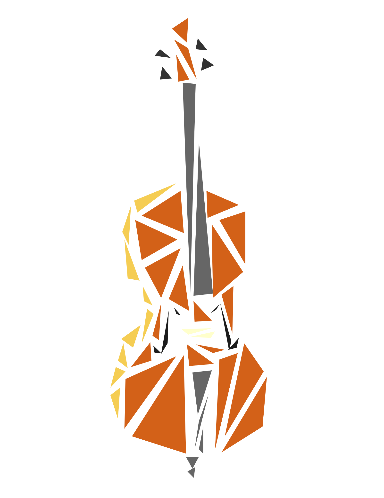

ART GALLERY
aes·thet·ic
/ es-ˈthe-tik / n -
a branch of philosophy dealing with the nature of beauty, art, and taste and with the creation and appreciation of beauty
a branch of philosophy dealing with the nature of beauty, art, and taste and with the creation and appreciation of beauty

MUSIC LIBRARY
in·tro·spec·tion
/ ˌin-trə-ˈspek-shən / n -
a reflective looking inward: an examination of one's own thoughts and feelings
a reflective looking inward: an examination of one's own thoughts and feelings